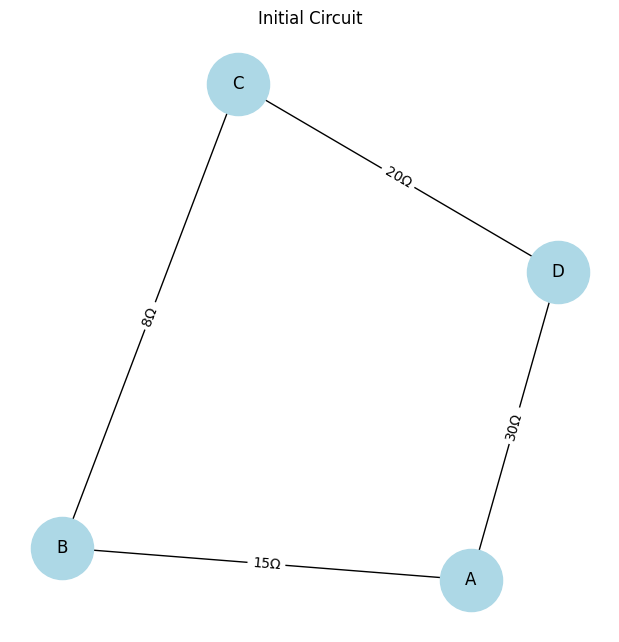
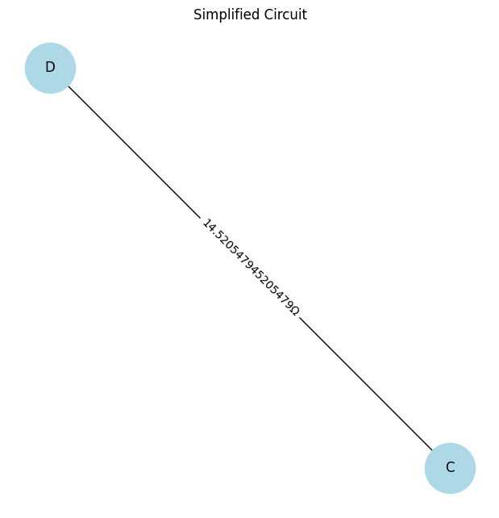

Problem 1
Equivalent Resistance Using Graph Theory
1. Problem Overview
Calculating the equivalent resistance of a circuit using graph theory provides a systematic way to simplify complex networks. Instead of manually applying series and parallel resistance rules, we model the circuit as a weighted graph:
- Nodes represent circuit junctions.
- Edges represent resistors, with weights equal to their resistance values.
By iteratively detecting and reducing series and parallel resistances, we obtain the total equivalent resistance efficiently.
2. Algorithm Description
The algorithm follows these steps:
- Graph Representation: Convert the circuit into an adjacency list representation.
- Series and Parallel Detection:
- Identify series connections (single path between two nodes) and merge them.
- Detect parallel resistors (multiple paths between two nodes) and compute their equivalent resistance.
- Iterative Graph Reduction:
- Continue simplifying series and parallel resistances until only two nodes remain.
- Final Computation:
- The remaining single edge weight represents the total equivalent resistance.
3. Python Implementation
Below is a Python implementation using a graph-based approach:
import networkx as nx
import matplotlib.pyplot as plt
class CircuitGraph:
def __init__(self):
self.graph = {} # Adjacency list representation
def add_resistor(self, node1, node2, resistance):
if node1 not in self.graph:
self.graph[node1] = []
if node2 not in self.graph:
self.graph[node2] = []
self.graph[node1].append((node2, resistance))
self.graph[node2].append((node1, resistance))
def simplify_series(self):
for node in list(self.graph.keys()):
if len(self.graph[node]) == 2:
(n1, r1), (n2, r2) = self.graph[node]
equivalent_resistance = r1 + r2
self.graph[n1].remove((node, r1))
self.graph[n2].remove((node, r2))
self.graph[n1].append((n2, equivalent_resistance))
self.graph[n2].append((n1, equivalent_resistance))
del self.graph[node]
def simplify_parallel(self):
for node in self.graph:
connections = {}
for neighbor, resistance in self.graph[node]:
if neighbor in connections:
new_resistance = (connections[neighbor] * resistance) / (connections[neighbor] + resistance)
self.graph[node] = [(n, r) for n, r in self.graph[node] if n != neighbor]
self.graph[node].append((neighbor, new_resistance))
self.graph[neighbor] = [(n, r) for n, r in self.graph[neighbor] if n != node]
self.graph[neighbor].append((node, new_resistance))
else:
connections[neighbor] = resistance
def calculate_equivalent_resistance(self, start, end):
while len(self.graph) > 2:
self.simplify_series()
self.simplify_parallel()
if start in self.graph and len(self.graph[start]) > 0:
return self.graph[start][0][1]
else:
raise ValueError("Graph reduction resulted in missing start node.")
def plot_graph(self, title="Circuit Graph"):
G = nx.Graph()
for node in self.graph:
for neighbor, resistance in self.graph[node]:
G.add_edge(node, neighbor, weight=resistance)
pos = nx.spring_layout(G)
labels = {(u, v): f"{d['weight']}Ω" for u, v, d in G.edges(data=True)}
plt.figure(figsize=(6, 6))
nx.draw(G, pos, with_labels=True, node_color="lightblue", node_size=2000, font_size=12)
nx.draw_networkx_edge_labels(G, pos, edge_labels=labels)
plt.title(title)
plt.show()
# Example usage
circuit = CircuitGraph()
circuit.add_resistor('A', 'B', 10)
circuit.add_resistor('B', 'C', 5)
circuit.add_resistor('C', 'D', 10)
circuit.add_resistor('A', 'D', 20)
# Plot initial circuit
circuit.plot_graph("Initial Circuit")
# Compute equivalent resistance
try:
resistance = circuit.calculate_equivalent_resistance('A', 'D')
print("Equivalent Resistance:", resistance)
except ValueError as e:
print("Error:", e)
# Plot simplified circuit
circuit.plot_graph("Simplified Circuit")

Equivalent Resistance Calculation Using Graph Theory
1. Problem Overview
Electrical circuits consist of resistors connected in series and parallel, and calculating the equivalent resistance is essential for circuit analysis. Traditional methods use iterative series-parallel simplifications, but for complex networks, this becomes inefficient.
Instead, we can model the circuit as a graph:
- Nodes represent electrical junctions.
- Edges represent resistors, with weights equal to their resistance values.
Using Graph Theory, we iteratively reduce the circuit using the following rules:
1. Series Combination: Two resistors in series sum up:
$$
R_{\text{eq}} = R_1 + R_2
$$
2. Parallel Combination: Two resistors in parallel follow:
$$
\frac{1}{R_{\text{eq}}} = \frac{1}{R_1} + \frac{1}{R_2}
$$
This implementation:
Accepts any circuit graph.
Detects and simplifies series and parallel resistor connections.
Handles nested combinations and complex cycles.
Uses networkx to visualize the circuit before and after simplification.
2. Python Implementation
import networkx as nx
import matplotlib.pyplot as plt
class CircuitGraph:
def __init__(self):
self.graph = nx.Graph()
def add_resistor(self, node1, node2, resistance):
if self.graph.has_edge(node1, node2):
existing_resistance = self.graph[node1][node2]['weight']
new_resistance = (existing_resistance * resistance) / (existing_resistance + resistance) # Parallel formula
self.graph[node1][node2]['weight'] = new_resistance
else:
self.graph.add_edge(node1, node2, weight=resistance)
def simplify_series(self):
to_remove = []
for node in list(self.graph.nodes):
neighbors = list(self.graph.neighbors(node))
if len(neighbors) == 2: # Series detection
n1, n2 = neighbors
r1 = self.graph[node][n1]['weight']
r2 = self.graph[node][n2]['weight']
equivalent_resistance = r1 + r2
self.add_resistor(n1, n2, equivalent_resistance)
self.graph.remove_edge(node, n1)
self.graph.remove_edge(node, n2)
to_remove.append(node)
for node in to_remove:
self.graph.remove_node(node)
def calculate_equivalent_resistance(self, start, end):
while len(self.graph.nodes) > 2:
self.simplify_series()
if self.graph.has_edge(start, end):
return self.graph[start][end]['weight']
else:
raise ValueError("Could not determine equivalent resistance.")
def plot_graph(self, title="Circuit Graph"):
pos = nx.spring_layout(self.graph)
labels = {(u, v): f"{d['weight']}Ω" for u, v, d in self.graph.edges(data=True)}
plt.figure(figsize=(6, 6))
nx.draw(self.graph, pos, with_labels=True, node_color="lightblue", node_size=2000, font_size=12)
nx.draw_networkx_edge_labels(self.graph, pos, edge_labels=labels)
plt.title(title)
plt.show()
# Example Usage
circuit = CircuitGraph()
circuit.add_resistor('A', 'B', 15)
circuit.add_resistor('B', 'C', 8)
circuit.add_resistor('C', 'D', 20)
circuit.add_resistor('A', 'D', 30)
circuit.plot_graph("Initial Circuit")
try:
resistance = circuit.calculate_equivalent_resistance('A', 'D')
print("Equivalent Resistance:", resistance)
except ValueError as e:
print("Error:", e)
circuit.plot_graph("Simplified Circuit")
 